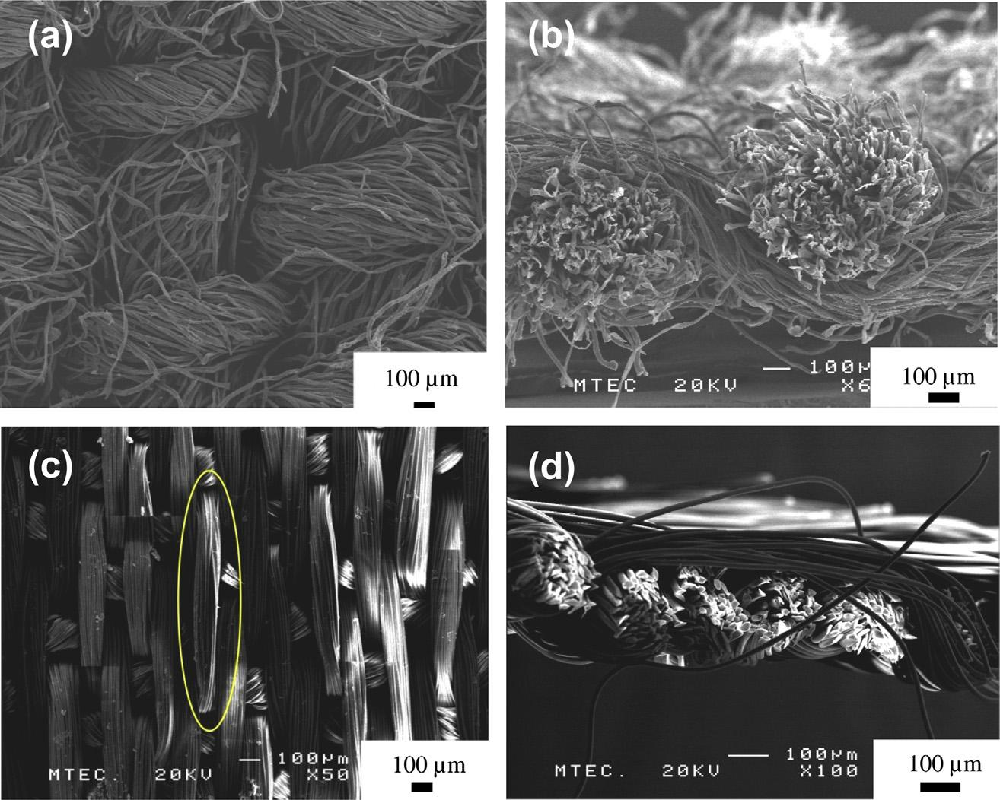

Materiais superhidrofóbicos bio-inspirados
Introdução
Superhidrofobicidade

Pétala de Rosa

Folha de Lótus
Experimentos
- Crescimento de nanobastões de ZnO
- Teste de hidrofobicidade (medida do ângulo de contato)
- Teste de adesão (gota pendente)
Resultados
Diferenças estruturais entre tecidos ásperos e lisos

Fibras ásperas com nanobastões de ZnO
Formação de clusters e bastões com diversidade de dimensõesFibras lisas com nanobastões de ZnO
Bastões uniformes e igualmente distribuídos pelo tecidoFibra áspera + Nanobastões de ZnO = Efeito Pétala de Rosa
Pendant water droplet test
Diferenças notáveis entre os testes:
- Formato da gota pendente
- Volume da gota no momento do destacamento
- Presença de resíduo no tecido
Discussão
A hierarquia estrutural resultou nos efeitos superhidrofobicidade e adesão de ambos os materiais
Os padrões de distribuição dos nanobastões foram determinantes
No tecido áspero a distribuição de clusters foi aleatória e, além disso, o tamanho dos clusters variava. Enquanto isso o tecido liso apresentou distribuição homogênea.
Por quê?
Deposição vs. Migração
Morfologia das partículas
Efeito da rugosidade na nucleação dos nanobastões
Tecido liso: efeito lótus
Aproximação do regime ideal de Cassie-Baxter devido à distribuição homogênea dos nanobastões.
Tecido áspero: efeito pétala de rosa
Propostas:
- Interações hidrofóbicas nos interstícios das nano-estruturas
- A água se prende no ápice da microestrutura
- A fibra, por sua topologia dinâmica, atingiria a água sem que esta colapsase
Diferença entre o tecido áspero e a pétala de rosa
Conclusões
- Síntese de materiais de características opostas sob a mesma condição
- Tecidos lisos resultam no efeito lótus, enquanto tecidos ásperos resultam no efeito pétala de rosa
- Síntese de roupas hidrofóbicas sem a nessecidade de quaisquer outras modificações químicas